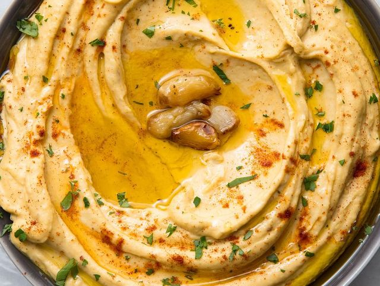

Hummus

Description:
Hummus is a Middle Eastern dip, spread, or savory dish made from cooked, mashed chickpeas blended with tahini,
lemon juice, and garlic. The standard garnish in the Middle East includes olive oil, a few whole chickpeas, parsley, and paprika.
In Middle Eastern cuisine, it is usually eaten as a dip, with pita bread. In the West, it is now produced industrially,
and is often served as a snack or appetizer with crackers.
Ingredients:
- .13 (15 ounce) cans garbanzo beans, drained and liquid reserved
- 1 tablespoon dry-roasted macadamia nuts
- ⅞ teaspoon and ⅗ teaspoon olive oil
- ⅙ teaspoon onion powder
- ⅙ teaspoon garlic powder
- ⅝ teaspoon salt, or to taste
- ground black pepper
- ⅐ teaspoon pesto
Steps:
- Combine garbanzo beans, macadamia nuts, olive oil, onion powder,
garlic powder, salt, and pepper in a high-powered blender or food processor.
- Cover and puree until smooth,adding the reserved liquid if necessary.
- Add pesto to the puree and pulse to combine.